I started to write this vignette a while ago, before I knew object-oriented programming (OOP) in R. So this might be interesting for you if you don’t know OOP but want to learn more about all the internals of pyramidi. If you just want to see some use cases or if you know well R6, the other vignettes might be a better place to start.
We’ll extract the information of a midi file into dataframe. We’ll use the package internal midi file:
midi_file_str <- system.file("extdata", "test_midi_file.mid", package = "pyramidi")
midifile <- mido$MidiFile(midi_file_str)
ticks_per_beat <- midifile$ticks_per_beatNow we can load the information of the midifile into a
dataframe:
dfc = miditapyr$frame_midi(midifile)
head(dfc, 20)
#> i_track meta msg
#> 1 0 TRUE track_name, drum-t1-1-t1, 0
#> 2 0 FALSE note_on, 0, 43, 72, 9
#> 3 0 FALSE note_on, 0, 39, 64, 9
#> 4 0 FALSE note_on, 0, 36, 101, 9
#> 5 0 TRUE set_tempo, 666666, 0
#> 6 0 TRUE time_signature, 4, 4, 24, 8, 0
#> 7 0 FALSE note_off, 240, 43, 72, 9
#> 8 0 FALSE note_off, 0, 39, 64, 9
#> 9 0 FALSE note_off, 0, 36, 101, 9
#> 10 0 FALSE note_on, 240, 42, 101, 9
#> 11 0 FALSE note_on, 0, 38, 101, 9
#> 12 0 FALSE note_on, 240, 43, 64, 9
#> 13 0 FALSE note_off, 0, 42, 101, 9
#> 14 0 FALSE note_off, 0, 38, 101, 9
#> 15 0 FALSE note_off, 240, 43, 64, 9
#> 16 0 FALSE note_on, 0, 36, 101, 9
#> 17 0 FALSE note_off, 240, 36, 101, 9
#> 18 0 FALSE note_on, 240, 43, 60, 9
#> 19 0 FALSE note_on, 0, 42, 101, 9
#> 20 0 FALSE note_off, 240, 43, 60, 9This dataframe contains the columns of the track index
i_track, meta (whether the midi event is a
note event), and msg containing named lists of further midi
event information.
The MidiFile() function of mido also yields
the ticks_per_beat
of the file:
ticks_per_beat
#> [1] 960The miditapyr$unnest_midi() function transforms the
msg column of the dataframe to a wide format, where every
new column name corresponds to the names in the lists in
msg (like tidyr::unnest_wider()):
df <- miditapyr$unnest_midi(dfc) %>% as_tibble()
head(df, 20)
#> # A tibble: 20 × 13
#> i_track meta type name time note velocity channel tempo numerator
#> <dbl> <lgl> <chr> <chr> <dbl> <dbl> <dbl> <dbl> <dbl> <dbl>
#> 1 0 TRUE track_name drum… 0 NaN NaN NaN NaN NaN
#> 2 0 FALSE note_on NA 0 43 72 9 NaN NaN
#> 3 0 FALSE note_on NA 0 39 64 9 NaN NaN
#> 4 0 FALSE note_on NA 0 36 101 9 NaN NaN
#> 5 0 TRUE set_tempo NA 0 NaN NaN NaN 666666 NaN
#> 6 0 TRUE time_signa… NA 0 NaN NaN NaN NaN 4
#> 7 0 FALSE note_off NA 240 43 72 9 NaN NaN
#> 8 0 FALSE note_off NA 0 39 64 9 NaN NaN
#> 9 0 FALSE note_off NA 0 36 101 9 NaN NaN
#> 10 0 FALSE note_on NA 240 42 101 9 NaN NaN
#> 11 0 FALSE note_on NA 0 38 101 9 NaN NaN
#> 12 0 FALSE note_on NA 240 43 64 9 NaN NaN
#> 13 0 FALSE note_off NA 0 42 101 9 NaN NaN
#> 14 0 FALSE note_off NA 0 38 101 9 NaN NaN
#> 15 0 FALSE note_off NA 240 43 64 9 NaN NaN
#> 16 0 FALSE note_on NA 0 36 101 9 NaN NaN
#> 17 0 FALSE note_off NA 240 36 101 9 NaN NaN
#> 18 0 FALSE note_on NA 240 43 60 9 NaN NaN
#> 19 0 FALSE note_on NA 0 42 101 9 NaN NaN
#> 20 0 FALSE note_off NA 240 43 60 9 NaN NaN
#> # ℹ 3 more variables: denominator <dbl>, clocks_per_click <dbl>,
#> # notated_32nd_notes_per_beat <dbl>Except the name column this seems to be the same as
dfc %>% unnest_wider(msg)
#> # A tibble: 268 × 13
#> i_track meta type name time note velocity channel tempo numerator
#> <dbl> <lgl> <chr> <chr> <int> <int> <int> <int> <int> <int>
#> 1 0 TRUE track_name drum… 0 NA NA NA NA NA
#> 2 0 FALSE note_on NA 0 43 72 9 NA NA
#> 3 0 FALSE note_on NA 0 39 64 9 NA NA
#> 4 0 FALSE note_on NA 0 36 101 9 NA NA
#> 5 0 TRUE set_tempo NA 0 NA NA NA 666666 NA
#> 6 0 TRUE time_signa… NA 0 NA NA NA NA 4
#> 7 0 FALSE note_off NA 240 43 72 9 NA NA
#> 8 0 FALSE note_off NA 0 39 64 9 NA NA
#> 9 0 FALSE note_off NA 0 36 101 9 NA NA
#> 10 0 FALSE note_on NA 240 42 101 9 NA NA
#> # ℹ 258 more rows
#> # ℹ 3 more variables: denominator <int>, clocks_per_click <int>,
#> # notated_32nd_notes_per_beat <int>In the midi format, time is treated as relative increments between
events (measured in ticks). In order to derive the total time passed,
you can use the function tab_measures():
dfm <- tab_measures(df, ticks_per_beat, c("m", "b")) %>%
# create a variable `track` with the track name (in order to have it in the plot below)
mutate(track = ifelse(purrr::map_chr(name, typeof) != "character",
list(NA_character_),
name)) %>%
unnest(cols = track) %>%
fill(track)
dfm
#> # A tibble: 268 × 17
#> i_track meta type name note velocity channel ticks m b i_note
#> <dbl> <lgl> <chr> <chr> <dbl> <dbl> <dbl> <dbl> <dbl> <dbl> <int>
#> 1 0 TRUE track_na… drum… NaN NaN NaN 0 0 0 0
#> 2 0 FALSE note_on NA 43 72 9 0 0 0 1
#> 3 0 FALSE note_on NA 39 64 9 0 0 0 1
#> 4 0 FALSE note_on NA 36 101 9 0 0 0 1
#> 5 0 TRUE set_tempo NA NaN NaN NaN 0 0 0 0
#> 6 0 TRUE time_sig… NA NaN NaN NaN 0 0 0 0
#> 7 0 FALSE note_off NA 43 72 9 240 0.25 1 1
#> 8 0 FALSE note_off NA 39 64 9 240 0.25 1 1
#> 9 0 FALSE note_off NA 36 101 9 240 0.25 1 1
#> 10 0 FALSE note_on NA 42 101 9 480 0.5 2 1
#> # ℹ 258 more rows
#> # ℹ 6 more variables: tempo <dbl>, numerator <dbl>, denominator <dbl>,
#> # clocks_per_click <dbl>, notated_32nd_notes_per_beat <dbl>, track <chr>This function adds further columns:
You can split the dataframe in two by whether the events are meta or not:
df_meta %>% as_tibble()
#> # A tibble: 8 × 14
#> i_track meta type name ticks m b i_note tempo numerator
#> <dbl> <lgl> <chr> <chr> <dbl> <dbl> <dbl> <int> <dbl> <dbl>
#> 1 0 TRUE track_name drum-t… 0 0 0 0 NaN NaN
#> 2 0 TRUE set_tempo NA 0 0 0 0 666666 NaN
#> 3 0 TRUE time_signature NA 0 0 0 0 NaN 4
#> 4 0 TRUE end_of_track NA 15361 16.0 64.0 0 NaN NaN
#> 5 1 TRUE track_name Audio+… 0 0 0 0 NaN NaN
#> 6 1 TRUE end_of_track NA 15361 16.0 64.0 0 NaN NaN
#> 7 2 TRUE track_name Audio+… 0 0 0 0 NaN NaN
#> 8 2 TRUE end_of_track NA 15361 16.0 64.0 0 NaN NaN
#> # ℹ 4 more variables: denominator <dbl>, clocks_per_click <dbl>,
#> # notated_32nd_notes_per_beat <dbl>, track <chr>
df_notes %>% as_tibble()
#> # A tibble: 260 × 11
#> i_track meta type note velocity channel ticks m b i_note track
#> <dbl> <lgl> <chr> <dbl> <dbl> <dbl> <dbl> <dbl> <dbl> <int> <chr>
#> 1 0 FALSE note_on 43 72 9 0 0 0 1 drum-…
#> 2 0 FALSE note_on 39 64 9 0 0 0 1 drum-…
#> 3 0 FALSE note_on 36 101 9 0 0 0 1 drum-…
#> 4 0 FALSE note_off 43 72 9 240 0.25 1 1 drum-…
#> 5 0 FALSE note_off 39 64 9 240 0.25 1 1 drum-…
#> 6 0 FALSE note_off 36 101 9 240 0.25 1 1 drum-…
#> 7 0 FALSE note_on 42 101 9 480 0.5 2 1 drum-…
#> 8 0 FALSE note_on 38 101 9 480 0.5 2 1 drum-…
#> 9 0 FALSE note_on 43 64 9 720 0.75 3 2 drum-…
#> 10 0 FALSE note_off 42 101 9 720 0.75 3 1 drum-…
#> # ℹ 250 more rowsEach note in the midi file is characterized by a note_on
and a note_off event. In order to generate a piano roll
plot with ggplot2, we need to tidyr::pivot_wider() those
events. This can be done with the function
pivot_wide_notes():
df_not_notes <-
df_notes %>%
dplyr::filter(!stringr::str_detect(type, "^note_o[nf]f?$"))
df_notes_wide <-
df_notes %>%
dplyr::filter(stringr::str_detect(type, "^note_o[nf]f?$")) %>%
# tab_measures(df_meta, df_notes, ticks_per_beat) %>%
pivot_wide_notes() %>%
left_join(pyramidi::midi_defs)
#> Joining with `by = join_by(note)`
df_notes_wide
#> # A tibble: 130 × 15
#> i_track meta note channel i_note track velocity_note_on velocity_note_off
#> <dbl> <lgl> <dbl> <dbl> <int> <chr> <dbl> <dbl>
#> 1 0 FALSE 43 9 1 drum-t… 72 72
#> 2 0 FALSE 39 9 1 drum-t… 64 64
#> 3 0 FALSE 36 9 1 drum-t… 101 101
#> 4 0 FALSE 42 9 1 drum-t… 101 101
#> 5 0 FALSE 38 9 1 drum-t… 101 101
#> 6 0 FALSE 43 9 2 drum-t… 64 64
#> 7 0 FALSE 36 9 2 drum-t… 101 101
#> 8 0 FALSE 43 9 3 drum-t… 60 60
#> 9 0 FALSE 42 9 2 drum-t… 101 101
#> 10 0 FALSE 43 9 4 drum-t… 60 60
#> # ℹ 120 more rows
#> # ℹ 7 more variables: ticks_note_on <dbl>, ticks_note_off <dbl>,
#> # m_note_on <dbl>, m_note_off <dbl>, b_note_on <dbl>, b_note_off <dbl>,
#> # note_name <fct>In the new format, the data has half the number of rows. The columns
m, b, t, ticks,
time and velocity are each replaced by two
columns with the suffix _note_on and
_note_off.
Now we have the midi data in the right format for the piano roll plot:
df_notes_wide %>%
ggplot() +
geom_segment(
aes(
x = m_note_on,
y = note_name,
xend = m_note_off,
yend = note_name,
color = velocity_note_on
)
) +
# each midi track is printed into its own facet:
facet_wrap( ~ track,
ncol = 1,
scales = "free_y") +
guides(color=guide_colorbar(title="Note velocity")) +
labs(
title = "Piano roll of the note events in the midi file",
subtitle = "Only notes played are shown."
) +
xlab("Measures") +
scale_x_continuous(breaks = seq(0, 16, 4),
minor_breaks = 0:16) +
scale_colour_gradient() +
theme_minimal()
The new format also allows to easily manipulate the midi data. For
instance, let’s put the volume (called velocity in midi) of
the first beat in every bar to the maximum (127), and to half of its
original value otherwise:
df_notes_wide_mod <- df_notes_wide %>%
mutate(
velocity_note_on = ifelse(
# As it's a 4/4 beat, the first beat of each bar is a multiple of 4:
b_note_on %% 4 == 0,
127,
velocity_note_on / 2
)
)Let’s compare the modified value to the original one:
df_notes_wide %>%
select(b_note_on, velocity_note_on) %>%
bind_cols(
new = df_notes_wide_mod$velocity_note_on
)
#> # A tibble: 130 × 3
#> b_note_on velocity_note_on new
#> <dbl> <dbl> <dbl>
#> 1 0 72 127
#> 2 0 64 127
#> 3 0 101 127
#> 4 2 101 50.5
#> 5 2 101 50.5
#> 6 3 64 32
#> 7 4 101 127
#> 8 6 60 30
#> 9 6 101 50.5
#> 10 8 60 127
#> # ℹ 120 more rowsWith an ifelse() statement, we modified the volume of
the midi notes, depending on if they’re the first beat in the measure or
not.
Other possible manipulations could be for instance:
round()ing the
note_on/note_off times,group_by(floor(m_note_on))-summarize() logic,
orgroup_by(floor(m_note_on)) -
mutate() logic.We can transform the wide midi data back to the long format:
df_notes_long <- pivot_long_notes(df_notes_wide)We can now add the non note events:
df_midi_out <- merge_midi_frames(df_meta, df_notes_long, df_not_notes)
df_midi_out
#> # A tibble: 268 × 14
#> i_track channel note type velocity meta name tempo numerator denominator
#> <dbl> <dbl> <dbl> <chr> <dbl> <lgl> <chr> <dbl> <dbl> <dbl>
#> 1 0 9 43 note… 72 FALSE NA NA NA NA
#> 2 0 9 39 note… 64 FALSE NA NA NA NA
#> 3 0 9 36 note… 101 FALSE NA NA NA NA
#> 4 0 NA NA trac… NA TRUE drum… NaN NaN NaN
#> 5 0 NA NA set_… NA TRUE NA 666666 NaN NaN
#> 6 0 NA NA time… NA TRUE NA NaN 4 4
#> 7 0 9 43 note… 72 FALSE NA NA NA NA
#> 8 0 9 39 note… 64 FALSE NA NA NA NA
#> 9 0 9 36 note… 101 FALSE NA NA NA NA
#> 10 0 9 42 note… 101 FALSE NA NA NA NA
#> # ℹ 258 more rows
#> # ℹ 4 more variables: clocks_per_click <dbl>,
#> # notated_32nd_notes_per_beat <dbl>, track <chr>, time <dbl>The time value in midi format is given by the number of
ticks passed between events.
Now we can transform the data back to a dataframe of the same format
as the one we got with miditapyr$frame_midi():
dfc2 <-
df_midi_out %>%
# When reticulate converts R dataframes to pandas, there are complications
# with character columns containing missing values.
# repair_reticulate_conversion = TRUE, repairs that in the miditapyr python
# code:
miditapyr$nest_midi(repair_reticulate_conversion = TRUE)
as_tibble(dfc2)
#> # A tibble: 268 × 3
#> i_track meta msg
#> <dbl> <lgl> <list>
#> 1 0 FALSE <named list [5]>
#> 2 0 FALSE <named list [5]>
#> 3 0 FALSE <named list [5]>
#> 4 0 TRUE <named list [4]>
#> 5 0 TRUE <named list [4]>
#> 6 0 TRUE <named list [7]>
#> 7 0 FALSE <named list [5]>
#> 8 0 FALSE <named list [5]>
#> 9 0 FALSE <named list [5]>
#> 10 0 FALSE <named list [5]>
#> # ℹ 258 more rowsAnd we can save it back to a midi file:
miditapyr$write_midi(dfc2, ticks_per_beat, "test.mid")